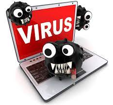

Setelah mengikuti materi pada pertemuan ke-12 ini mahasiswa mampu mengetahui kejahatan komputer yang sering terjadi di masyarakat dan bisa memahami tentang proses pengadilan kejahatan dunia maya, dan implikasinya di masyarakat dunia usaha.
Kejahatan komputer adalah segala pelanggaran hukum pidana yang melibatkan pengetahuan teknologi komputer untuk persiapan, penyelidikan, dan penuntutan mereka. Dengan penggunaan dan penyalahgunaan komputer ke berbagai ranah baru, pengertian kejahatan komputerpun berubah pengertiannya. Dengan adanya aplikasi komputer yang digunakan tidak hanya di komputer. Kejahatan komputerpun meluas ke berbagai bidang contohnya telekomunikasi, baik digunakan langsung maupun tidak langsung.
Yang sangat sesuai untuk mendefiniskan kejahatan komputer pada saat sekarang ini adalah segala tindakan ilegal yang menggunakan pengetahuan komputer yang ditujukan untuk perbuatan kejahatan atau melanggar hukum. Contoh dari kejahatan komputer antara lain pencurian hardware dan software, manipulasi data, mengakses sistem tanpa izin atau ilegal dan masih banyak lagi. Kejahatan komputer terus berkembang sejalan dengan perkembangan teknologi, salah satunya adalah penyebaran virus komputer. Contoh beberapa virus komputer yaitu :
Adalah virus yang memiliki sifat seperti parasite karena dapat memperbanyak dirinya sendiri yang jika dibiarkan terus menerus akan membuat penyimpanan pada komputer penuh, yang kemudian menyebabkan sistem pada komputer menjadi mudah rapuh. Tidak hanya memperbanyak dirinya, Worm juga dapat membuat file yang tidak berguna
pada suatu komputer yang terjangkit. Oleh karena itu tidak heran jika hardisk pada komputer yang terjangkit menjadi cepat penuh. Virus ini memiliki penyebaran lokasi sama seperti Trojan, yaitu ke tempat yang terhubung dengan internet seperti e-mail.
Virus inipun mampu untuk mencuri dan mengendalikan data yang ada di dalam komputer. Biasanya virus ini menyebar ke komputer yang terhubung dengan internet, seperti melalui e-mail ataupun data pribadi lainnya seperti yang tidak dikunci dengan password. Pada awalnya Trojan tidak dimasukan ke dalam kategori virus. Namun karena sifatnya sangat mengganggu, akhirnya Trojan dimasukan ke dalam golongan virus komputer. Beberapa anti virus untuk menghindari dari virus ini contohnya Trojan Hunter dan Trojan Remover. Tidak berarti bahwa dengan menggunakan anti virus ini maka komputer anda akan terhindar dari Trojan, tapi paling tidak dapat mengurangi kemungkinannya komputer terjangkit Trojan. Contoh Trojan yang dikirim melalui email baru-baru ini salah satunya adalah e-mail yang berisi file Exel yang seolah-olah atau diduga dikirim oleh WHO padahal ini adalah Trojan-Downloader yang diam-diam akan menginstal file berbahaya lainnya.
Merupakan jenis virus komputer yang bersembunyi pada RAM komputer. Virus ini akan menginfeksi sistem operasi tertentu dan jika tidak segera ditangani akan menyebar dan menginfeksi hardisk. Virus ini sangat berbahaya bagi RAM karena menyerang secara cepat dan dapat memformat hardisk dan menyebabkan beberapa aplikasi tidak dapat terbuka.
FAT virus atau File Allocation Table virus, yang sesuai dengan namanya adalah virus yang mampu merusak file-file tertentu. Biasanya virus ini bersembunyi pada lokasi penyimpanan pribadi. Virus ini mempunyai cara kerja yang unit, seperti menyembunyikan file-file penting yang seolah-olah file tersebut sudah terhapus atau hilang karena sulit atau bahkan tidak dapat ditemukan.
Virus ini biasanya memiliki bentuk yang serupa dengan file yang baik-baik saja. Virus ini lebih menyerang pada mekanisme yang bisa dipakai atau dapat mengakses sistem, jaringan atau apalikasi. Contohnya seperti meminta proses login ataupun autentifikasi.
Virus ini sama seperti Trojan yang awalnya tidak dimasukan dalam kategori virus, namun Web Scripting Virus ini adalah sebuah kode program dimana digunakan untuk menjalankan konten yang ada di dalam suatu website. Sifat dari virus ini dianggap sangat menggangu program pada komputer yang oleh sebab itu dimasukan ke dalam virus komputer. Salah satu cara mengatasi virus ini adalah dengan membersihkan komputer secara rutin dengan menggunakan anti virus.
Ini adalah virus yang sengaja diciptakan yang ditujukan untuk menginfeksi dan merusak RAM. Jika suatu komputer sudah terjangkit oleh virus ini maka beberapa program pada komputer akan mulai terganggu dan menjadi lambat. Virus ini akan aktif dengan otomatis saat komputer dinyalakan.
Virus ini bertujuan untuk mengganggu data pribadi pemilik komputer. Virus ini biasanya bersembunyi pada hardsik, sehingga cukup sulit untuk ditemukan atau sulit terdeteksi. Contoh dari adanya virus ini pada komputer adalah missal, suatu file yang berformat .jpg akan berubah menjadi .Apk. Karena perubahan format pada file ini maka akan menyebabkan sulitnya menemukan file yang sebenarnya.
Virus ini menyerang dan menjangkit file yang memiliki format exe, yang cara kerjanya dengan membuat file dengan format tersebut menjadi error saat digunakan atau bahkan hilang tanpa alasan yang jelas. Virus ini akan aktif dan menginfeksi secara otomatis ketika suatu program dijalankan
Virus ini sering kali dibuat dengan sengaja dengan menggunakan bahasa pemrograman suatu aplikasi, bukan dari suatu bahasa pemrograman sistem operasi. Contohnya macro yang ada pada Microsoft Word. Virus ini biasanya menyerang file yang mempunyai format .pps, .xsl, .dcom, ataupun file yang memiliki sifat macro lainnya. Virus ini juga biasanya datang melalui e-mail. Salah satu cara menghindari file ini adalah jangan membuka link yang dikirim melalui email yang tidak jelas asalnya.
Spam adalah tindakan mengirimkan iklan atau pesan melalui email atau pesan elektonik lainnya, tanpa izin atau tidak dikehendaki. Contoh dari spamming antara lain mengirimkan pesan yang berisi menginformasikan bahwa memenangkan hadiah tertentu. Jika mendapat pesan seperti ini baiknya diabaikan saja, karena dikhawatirkan jika kita membalasnya maka akan terjerumus ke penipuan yang dilakukan oleh pelaku spamming.
Kejahatan komputer dengan cara carding bisa juga dikategorikan sebagai pencurian yang bersifat digital. Carding adalah aktifitas belanja secara ilegal dengan menggunakan nomor atau identitas kartu kredit orang lain. Pelaku carding disebut carder. Indonesia berada di posisi kedua dengan kejahatan carding terbanyak di dunia, posisi pertama ditempati oleh Ukraina.
Phishing adalah kegiatan menipu pengguna internet sehingga mereka dengan tidak sadar memberikan informasi penting seperti data diri,password dan lainnya. Kejahatan phishing ini biasanya ditujukan kepada pengguna electronic banking (internet banking).
Hacking adalah kegiatan mengakses sistem milik pihak lain melalui sistem operasional lain yang dilakukan oleh hacker. Hacking bisa digunakan untuk tujuan baik ataupun tujuan buruk yaitu kejahatan. Tujuan baik dari hacking ini adalah mengamati keamanan suatu program dan apabila ditemukan celah atau bug pada suatu sistem yang dimasuki maka akan melaporkannya kepada pemilik program. Kegiatan hacking yang bertujuan buruk atau kejahatan adalah seperti mengacak-acak atau merusak suatu program atau sistem.
Jika hacking bisa betujuan baik atau jahat, maka cracking bisa dikatakan adalah lebih menjurus tindakan kejahatan. Kegiatan cracking biasanya merusak bahkan mengambil data atau informasi penting. Cracking cenderung meretas suatu sistem atau program hanya untuk kesenangan tersendiri.
Beberapa faktor yang menyebabkan peningkatan dalam kejahatan komputer, antara lain :
Internet adalah faktor utama dalam terjadinya kejahatan komputer. Hal ini dapat terjadi karena banyaknya komputer yang tersambung dengan internet. Saat ini masyarakat banyak menggunakan internet pada komputer mereka tanpa memedulikan keamanan pada komputer
Maksudnya adalah saat ini seorang network security harus menguasai tidak hanya satu jenis aplikasi tapi harus menguasai banyak aplikasi dari berbagai vendor. Dengan kata lain kita kekurangan sumber daya yang mengerti tentang network security.
Saat ini software komputer mudah untuk mendapatkannya, bahkan bisa di download menggunakan internet. Softaware yang dapat di downloadpun beragam, baik yang bertujuan positif ataupun negatif.
Dengan mudahnya mendapatkan software, para pengguna dapat mempelajari suatu program dengan mudah dan memiliki keinginan untuk mencobanya. Para pengguna umumnya melakukan tindak kejahatan komputer ini hanya bertujuan untuk menguji kemampuan dan kepuasan diri.
Di Indonesia kita memiliki Undang-Undang ITE namun pada implementasinya masih belum maksimal dan sering kali terlalu dipaksakan.
Keamanan komputer adalah sangat penting untuk diperhatikan dalam mengamankan data-data penting dan informasi pribadi untuk menghindari adanya pencurian informasi.
Beberapa hal yang dapat dilakukan untuk meningkatkan keamanan komputer adalah :
Masyarakat tidak hanya menjadi korban dari tindak kejahatan komputer, tetapi banyak kasus masyarakat juga menjadi salah satu pelakunya. Jika pada posisi masyarakat menjadi korban dimana mereka dirugikan baik dengan kehilangan data-data, ataupun material seperti penipuan yang mengatasnamakan undian dan harus membayar sejumlah uang sebagai biaya administrasi dan sejenisnya. Kasus-kasus yang sering terjadi dimana masyarakat sebagai pelaku antara lain :
Kejahatan komputer dilatarbelakangi dengan bermacam-macam motif dan cara yang bisa terjadi. Motif dari kejahatan komputer dibagi menjadi :
Adalah kejahatan yang dilakukan untuk tujuan kepuasan pribadi untuk menunjukkan bahwa dirinya mampu untuk merekayasa, mengimplementasikan bidang teknologi informasi.
Adalah sebuah kejahatan yang dilakukan untuk mendapatkan keuntungan baik secara pribadi atau pada golongan tertentu yang berdampak pada kerugian pada pihak lain, baik secara ekonomi maupun politik.